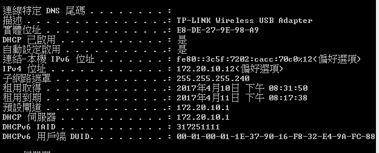
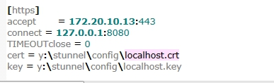

<!doctype html>
<html lang="en">
<head>
    <meta charset="utf-8">
<title>
2017 Spring 機械設計工程系協同產品設計實習
</title>
    <meta name="description" content="A framework for easily creating beautiful presentations using HTML">
    <meta name="author" content="Hakim El Hattab">
    
    <meta name="apple-mobile-web-app-capable" content="yes">
    <meta name="apple-mobile-web-app-status-bar-style" content="black-translucent">
    
    <meta name="viewport" content="width=device-width, initial-scale=1.0, maximum-scale=1.0, user-scalable=no">
    
    <link rel="stylesheet" href="https://cad-lab.github.io/cadlab_data/reveal/css/reveal.css">
    <link rel="stylesheet" href="https://cad-lab.github.io/cadlab_data/reveal/css/theme/black.css" id="theme">
    
    <!-- Theme used for syntax highlighting of code -->
    <link rel="stylesheet" href="https://cad-lab.github.io/cadlab_data/reveal/lib/css/zenburn.css">

    <!-- Printing and PDF exports -->
    <script>
        var link = document.createElement( 'link' );
        link.rel = 'stylesheet';
        link.type = 'text/css';
        link.href = window.location.search.match( /print-pdf/gi ) ? 'https://cad-lab.github.io/cadlab_data/reveal/css/print/pdf.css' : 'https://cad-lab.github.io/cadlab_data/reveal/css/print/paper.css';
        document.getElementsByTagName( 'head' )[0].appendChild( link );
    </script>

    <!--[if lt IE 9]>
    <script src="https://cad-lab.github.io/cadlab_data/reveal/lib/js/html5shiv.js"></script>
    <![endif]-->
</head>

<body>
<div class="reveal">
<!-- Any section element inside of this container is displayed as a slide -->
<div class="slides">
<section data-markdown>
    <script type="text/template">
## 2017Spring 協同產品設計實習

### 虎科大機械設計工程系

####學員 40423211 課程簡報

<small>
Created by [40423211](https://40423211.github.io/2017springcd_hw/blog/)
</small>

[協同產品設計實習課程個人網誌](blog/index.html)


    </script>
</section>


						
<section data-markdown>
    <script type="text/template">
# 投影片快捷鍵

* 利用箭頭上下前後換頁
* 按 f 鍵進入全螢幕模式 (full screen)
* 按 s 鍵可以顯示投影片筆記 (show)
* 按 o 鍵可以切換單張或全域檢視 (overview)
* 按 b 或 . 鍵可以切換螢幕黑屏 (black)
* 按 Esc 可以退出全螢幕或全域檢視 (Escape)

    </script>
</section>


						
<section>
<section data-markdown>
    <script type="text/template">
<!-- 請注意, @others 不可以內縮 -->
#Week1_上課筆記

解決在開啟start時發生的錯誤
    </script>
</section>


						
<section data-markdown>
    <script type="text/template">
<!-- 請注意, @others 不可以內縮 -->

    </script>
</section>


						
<section data-markdown>
    <script type="text/template">
<!-- 請注意, @others 不可以內縮 -->
<h3>發生錯誤的原因:</h3>
<h3>Stunnel資料夾裡的Config/Styunnel.conf裡的IP和電腦的IP不同</h3>
    </script>
</section>


						
<section data-markdown>
    <script type="text/template">
<!-- 請注意, @others 不可以內縮 -->
<h3>可以使用cmd裡使用ipconfig/all的指令找到電腦的IP位置</h3>

    </script>
</section>


						
<section data-markdown>
    <script type="text/template">
<!-- 請注意, @others 不可以內縮 -->

    </script>
</section>


						
<section data-markdown>
    <script type="text/template">
<!-- 請注意, @others 不可以內縮 -->
<h3>並將其複製貼到Styunnel.conf裡</h3>

    </script>
</section>


						
<section data-markdown>
    <script type="text/template">
<!-- 請注意, @others 不可以內縮 -->

    </script>
</section>


						
<section data-markdown>
    <script type="text/template">
<!-- 請注意, @others 不可以內縮 -->
###心得:以前要找到自己電腦的IP位置都要從控制台裡的無線網路連線尋找
現在只要在cmd裡打上ipconfig/all這個指令就會出現了 真是方便
    </script>
</section>


						
<section data-markdown>
    <script type="text/template">
##Week1_影片

<iframe width="560" height="315" src="https://www.youtube.com/embed/El5B5GbT_JQ" frameborder="0" allowfullscreen></iframe>

    </script>
</section>


						
</section>
</div>

</div>

<script src="https://cad-lab.github.io/cadlab_data/reveal/lib/js/head.min.js"></script>
<script src="https://cad-lab.github.io/cadlab_data/reveal/js/reveal.js"></script>
<script>
        // More info https://github.com/hakimel/reveal.js#configuration
        Reveal.initialize({
            controls: true,
            progress: true,
            history: true,
            center: true,

            transition: 'slide', // none/fade/slide/convex/concave/zoom

            // More info https://github.com/hakimel/reveal.js#dependencies
            dependencies: [
                { src: 'https://cad-lab.github.io/cadlab_data/reveal/lib/js/classList.js', condition: function() { return !document.body.classList; } },
                { src: 'https://cad-lab.github.io/cadlab_data/reveal/plugin/markdown/marked.js', condition: function() { return !!document.querySelector( '[data-markdown]' ); } },
                { src: 'https://cad-lab.github.io/cadlab_data/reveal/plugin/markdown/markdown.js', condition: function() { return !!document.querySelector( '[data-markdown]' ); } },
                { src: 'https://cad-lab.github.io/cadlab_data/reveal/plugin/highlight/highlight.js', async: true, callback: function() { hljs.initHighlightingOnLoad(); } },
                { src: 'https://cad-lab.github.io/cadlab_data/reveal/plugin/zoom-js/zoom.js', async: true },
                { src: 'https://cad-lab.github.io/cadlab_data/reveal/plugin/notes/notes.js', async: true },
                { src: 'https://cad-lab.github.io/cadlab_data/reveal/plugin/math/math.js', async: true }
            ]
        });
</script>
</body>
</html>

